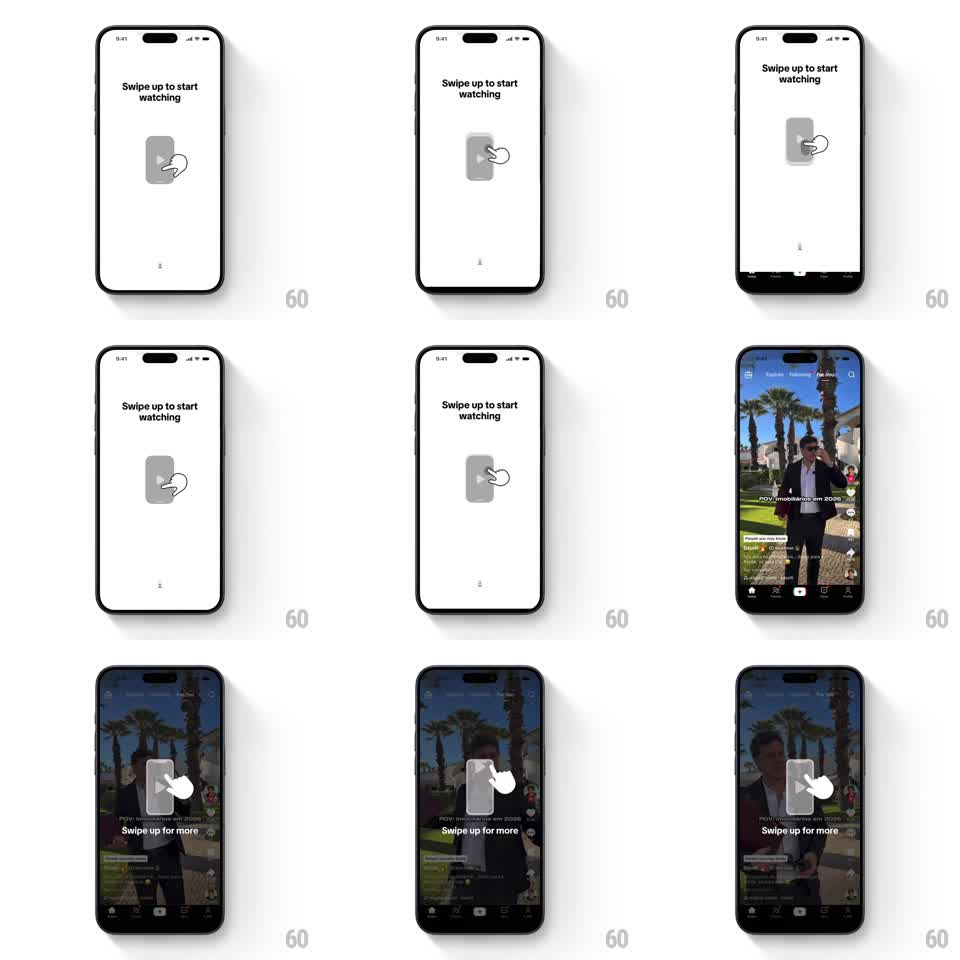

Media
Frame-by-frame

Rebuild this interaction 1:1: TikTok's first-launch coach mark - a hand ghost drags a phone card upward on loop over "Swipe up to start watching", and a real swipe slides the whole overlay up to reveal the feed.

Rebuild this interaction 1:1: TikTok's first-launch coach mark - a hand ghost drags a phone card upward on loop over "Swipe up to start watching", and a real swipe slides the whole overlay up to reveal the feed. ## Integration Integration: stack-agnostic spec - springs given as stiffness/damping, timed motions as duration + curve; map every value to your framework and animation library of choice. ## Scene White full-screen overlay: "Swipe up to start watching" bold headline top-center; a small grey phone-shaped card with a play triangle mid-screen; a white hand cursor ghost touching its lower half. Underneath: the first video of the feed (creator text, action rail, tab bar) waiting to be revealed. ## Motion spec Pattern: looping gesture ghost over a dismissible overlay. - The demo loop: hand presses the card (card squashes scaleY 0.96, 120ms), drags it up ~80px (400ms, ease-in-out), card fades 30% during the drag, then hand and card reset with a 300ms fade; loop pauses 600ms between reps. - A small chevron at the bottom pulses upward (translateY 4px, 800ms) as a second cue. - On a real swipe: the entire overlay tracks the finger 1:1 with slight resistance (drag distance * 0.9), the headline fades proportionally, and past 25% screen height release flings it off the top (velocity-inherited, 300ms) revealing the feed, which starts playing immediately. - Below threshold, the overlay springs back (spring ~320/18) and the demo loop resumes after 1s. ## Calibration - The ghost hand is a flat white shape with a soft shadow - instructional, not realistic. - The reveal is one motion: the video is already rendered behind, never loads in after. ## Reduced motion Hand demo replaced by a static arrow; overlay dismisses with a 250ms slide on any swipe. ## Don't miss - The coach card's play triangle stays centered while the card deforms - the icon doesn't squash. - After dismissal the overlay never returns on that install; the feed's own "Swipe up for more" overlay takes over with the same language.